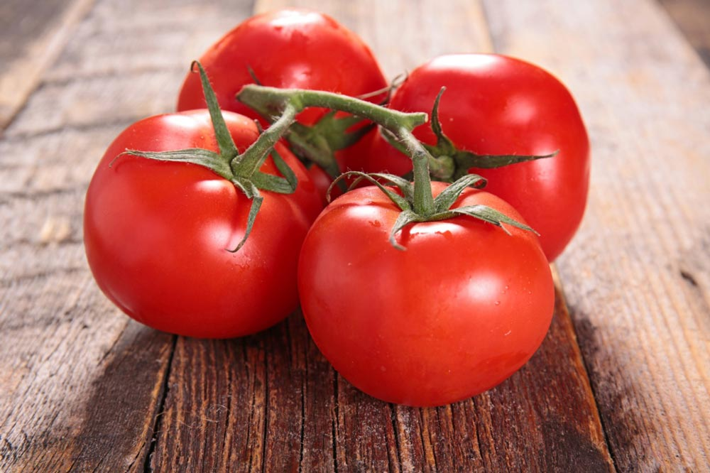
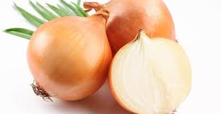
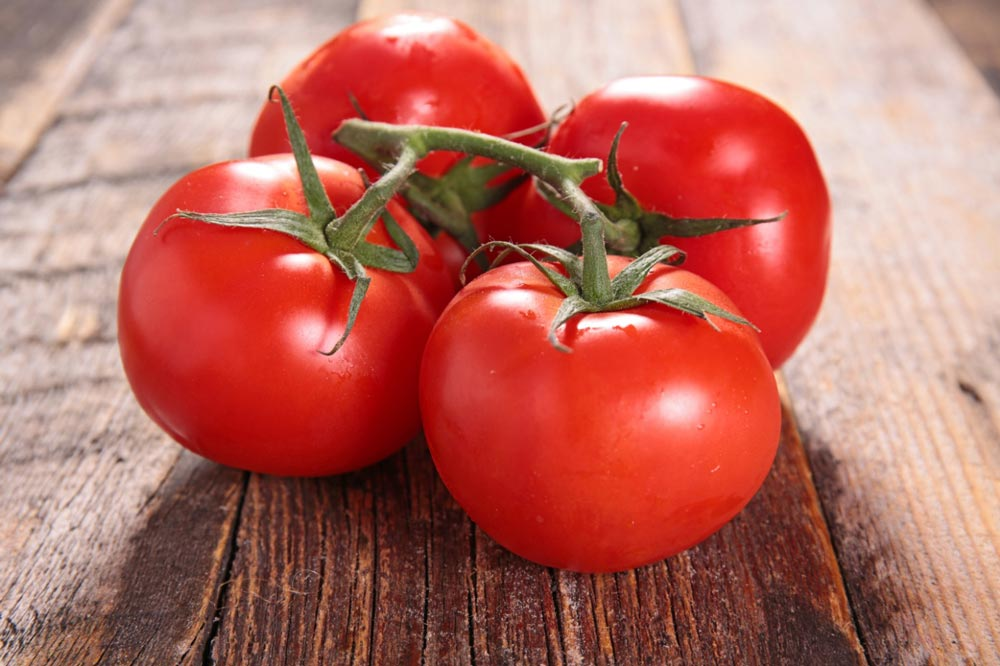
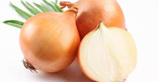

Scrambled Omelete
- eggs
- milk
- tomatos
- onions
- spinach
- turkey ham
- olive oil
- Dice up the onions, tomatos, spinach, and turkey ham
- Drizzle some oil in a pan
- Stir fry the onions, tomatos, spinach, and turkey ham on medium
heat
- Crack 2 eggs into a bowl
- Whisk the eggs and stir in some milk
- Pour it into the pan over the onions, tomatos, spinach, and turkey ham
- Use a spatula to scramble it
 



Tasty Cooking Website